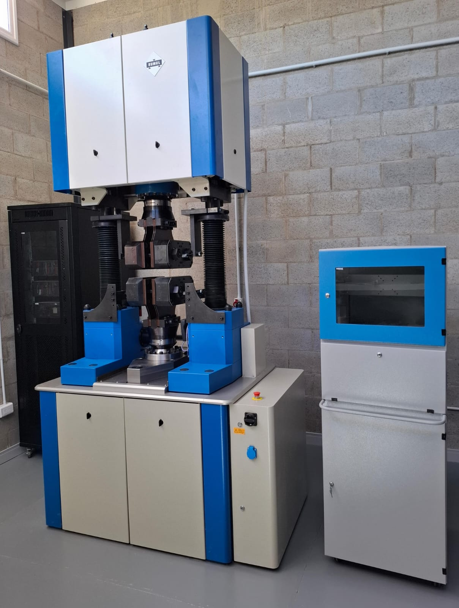

El objetivo de este Simposio es reunir a profesionales de la industria, académicos e investigadores que trabajan en temáticas vinculadas con la fatiga y la fractura de materiales en Argentina y la región, promoviendo el intercambio de experiencias, resultados, desafíos y soluciones en un ámbito de colaboración técnica y académica.
Estamos convencidos de que el debate interdisciplinario enriquece los proyectos y fomenta el pensamiento innovador.
Ensayos experimentales con máquina de fatiga resonante de alta capacidad
En el marco del Simposio se desarrollará un Workshop de Fatiga, que incluirá demostraciones experimentales con una máquina de fatiga resonante de alta capacidad, recientemente instalada en nuestro laboratorio.
El workshop está orientado a profesionales, investigadores y estudiantes interesados en la caracterización experimental del comportamiento a fatiga y la evaluación de integridad estructural.
